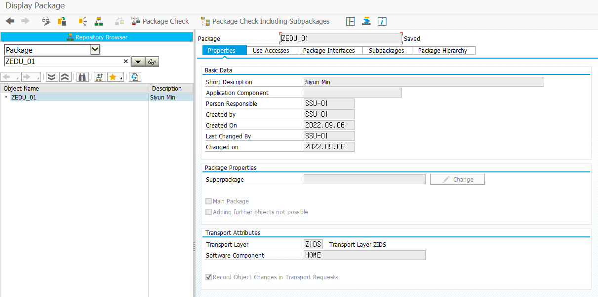

20220906 - DOMAIN, ELEMENT
se80

se09


SSU-01 double click
cts number - IDSK900124
se03


ABAP Dictionary

ABAP의 데이터베이스는 Dictionary 객체라고 하는데, 각각의 필드는 TYPE과 길이를 가지고 있다.
- 이 타입과 사이즈를 DATA ELEMENT가 지정해주고, 그 값을 통제하고 싶을 때 DOMAIN을 사용한다.
ABAP Dictionary 3가지 data type
Data elements - elementary data type 정의
Structures - data elements의 집합
Table types - structure의 집합

Tables and Fields
테이블은 columns과 rows로 구성
한 field는 unique name의 attribute를 가진다.
테이블은 하나 이상의 key field를 가질 수 있다.
currency (data type: CURR), quantity (QUAN), unit (UNIT)을 포함한 필드에 대한 reference table과 field는 반드시 정의

DOMAIN - 기술적 정의
ELEMENT - 비즈니스 의미 부여

Field를 정의하는 방법은 3가지
- table, data elements, domains
Two-level domain concept
business 의미가 다른 element 2개는 같은 type을 사용할 때 domain은 한 개가 된다.
DOMAIN

SYDATS - 날짜 자료 domain
Routine
length를 길게 지정하고, 값이 짧게 저장되면, 0000001001로 database에 저장되는데, Routine에 ALPHA를 붙이면 1001로 해당 데이터 조회 가능

package - 개발package (ex. ZEDU_001)
se11


Create domain


CTS에 담아서 운영으로 보냄

activate domain
ELEMENT
테이블 필드의 도메인 (기술적 속성) 작성 후 내용적인 의미를 부여하기 위해 작성


Assignment

이름, 영문이름, 전화번호 domain, element 만들어오기